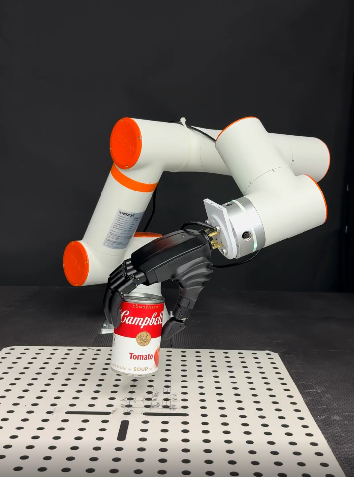
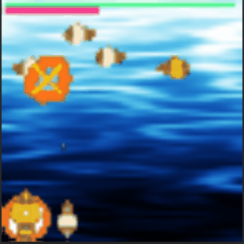
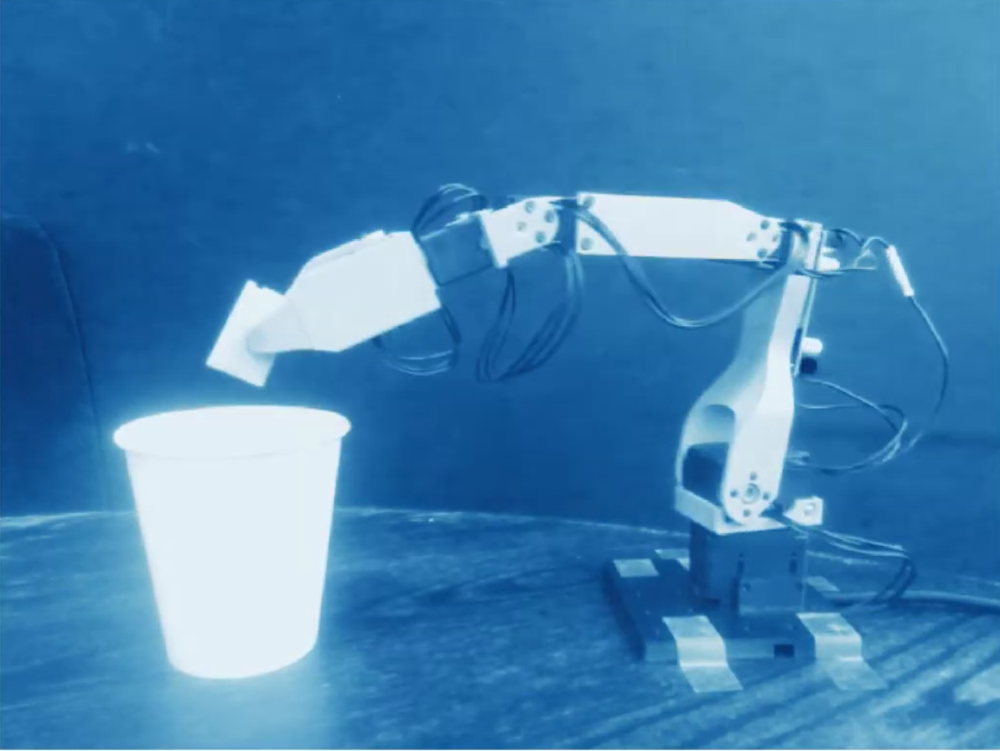
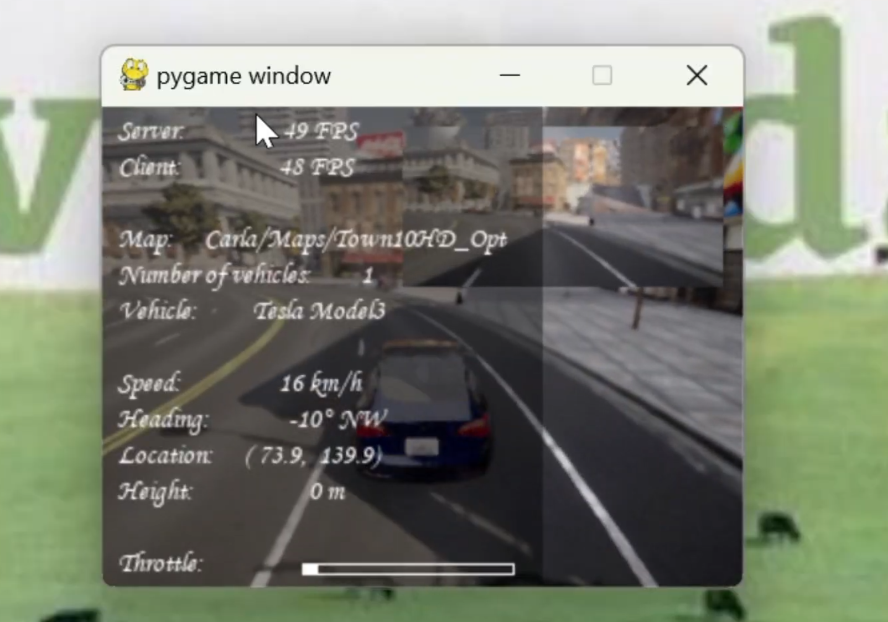
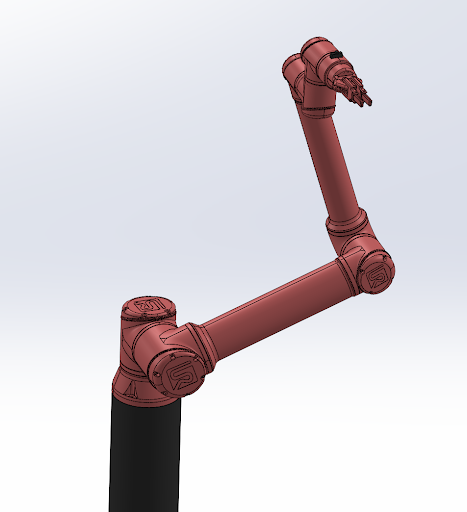

I build systems that let robots act in the real world — deploying foundation models on real hardware, studying how they break, and designing better ways for them to generalize.
A probabilistic grasping framework using variational inference to model multimodal uncertainty over object pose, contact geometry, and success probability. Rather than committing to a single grasp configuration, the system maintains a distribution over grasps — enabling robustness to sensor noise and occlusion that causes deployed humanoid systems to fail in unstructured environments.

VR bilateral teleoperation system using Meta Quest 3 hand tracking to control dexterous robot hands in real-time. Removes the demonstration data bottleneck — collecting high-fidelity contact-rich trajectories for imitation learning at scale without specialized hardware rigs.
A transfer learning framework enabling a single RL agent to operate across environments with heterogeneous action spaces — no retraining required. A transformer-based Inverse Dynamics Model infers semantic action embeddings from state-transition pairs at test time. A learned policy decodes via cosine similarity in latent space, selecting the correct action for any unseen embodiment. Jointly trained via REINFORCE + cross-entropy. Validated on OpenAI Gym Retro and multi-DoF robotic embodiments in Isaac Lab.

Studied how realistic language noise breaks OpenVLA. Noisy instructions ("okay, let's get the alphabet soup — try not to knock anything over") drop success from 69% to 17.5%. Compared two fixes: external LLM instruction filtering (LLaMA-3.1-8B, no retraining) vs internal LoRA fine-tuning on perturbed demonstrations. Evaluated via 20-rollout online evaluation per condition on LIBERO Object and Spatial suites.
| Condition | Baseline | LLM Filter |
|---|---|---|
| Noisy | 17.5% | 64.75% |
| Conv. | 64.0% | 69.0% |
| Paraphrase | 56.75% | 69.0% |
Assembled dual-arm Koch manipulators from scratch. Built a Python control wrapper for synchronized joint-state feedback. Collected pick-and-place demonstrations via active-passive mimicking. Trained an Action Chunking Transformer directly on the hardware demos.

PPO and DDPG agents for autonomous parallel and perpendicular parking in CARLA simulator. Sensor fusion across LiDAR, radar, and vision. Curriculum learning reduced average maneuver time by 20% with 95% safety compliance across 500+ evaluation trials.

Led a team of 4 to build a full ROS2 package for a 6-DoF UR10e performing autonomous coffee-making in a custom Gazebo environment. Implemented position, velocity, and effort controllers with inverse velocity kinematics solved to sub-2mm precision.

Notes on robot learning, foundation models, and things I've built that actually work (and things that didn't).